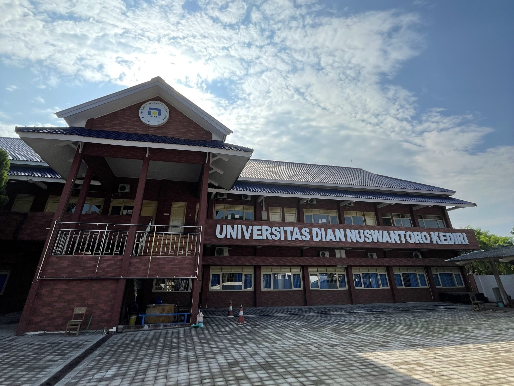

Profil Kampus Udinus
Universitas Dian Nuswantoro (UDINUS) merupakan salah satu perguruan tinggi swasta terkemuka di
Indonesia yang berlokasi di Kota Semarang, Jawa Tengah, dengan reputasi yang terus berkembang
sebagai kampus modern, unggul, dan berdaya saing global. Berdiri pada tahun 1990-an dan resmi
menjadi universitas pada tahun 2001, UDINUS telah menjadi pilihan favorit ribuan mahasiswa dari
berbagai daerah di Indonesia bahkan mancanegara yang ingin menempuh pendidikan tinggi berkualitas
dengan fasilitas lengkap serta dukungan tenaga pendidik profesional. Sebagai kampus yang memiliki
visi “Menjadi universitas unggul berbasis teknologi informasi, berwawasan global, dan berjiwa
kewirausahaan,” UDINUS selalu menekankan integrasi antara teknologi, inovasi, penelitian, serta
pengembangan softskill mahasiswa agar mereka siap menghadapi persaingan dunia kerja dan era
digitalisasi. UDINUS dikenal luas karena salah satu keunggulannya di bidang Teknologi Informasi,
terutama Program Studi Teknik Informatika dan Sistem Informasi yang telah terakreditasi Unggul,
bahkan banyak melahirkan alumni yang sukses berkarier di perusahaan besar nasional maupun multinasional,
menjadi entrepreneur, hingga profesional di bidang teknologi dan industri kreatif. Namun, keunggulan
UDINUS tidak hanya terbatas pada bidang IT saja, karena universitas ini juga memiliki fakultas
lain yang kuat, antara lain Fakultas Ilmu Komputer, Fakultas Ekonomi dan Bisnis, Fakultas
Kesehatan, Fakultas Ilmu Budaya, serta Fakultas Teknik, sehingga mahasiswa dapat memilih
program studi sesuai dengan minat dan bakat masing-masing. UDINUS pun selalu meningkatkan mutu
akademik dan non-akademik melalui penerapan kurikulum yang adaptif, program kerjasama dengan
berbagai universitas luar negeri, program pertukaran mahasiswa, joint research, hingga internship
internasional, yang semuanya memberi kesempatan bagi mahasiswa untuk mendapatkan pengalaman global.
Selain itu, UDINUS juga terkenal dengan fasilitas kampus yang modern, mulai dari gedung kuliah
ber-AC, laboratorium komputer mutakhir, ruang multimedia, klinik kesehatan, hingga berbagai
sarana olahraga seperti lapangan futsal, basket, dan pusat kebugaran, yang semuanya mendukung
aktivitas belajar dan pengembangan diri mahasiswa. Kehidupan kampus di UDINUS juga sangat dinamis
dengan berbagai organisasi mahasiswa, unit kegiatan mahasiswa (UKM), komunitas hobi, hingga kegiatan
kewirausahaan yang mewadahi kreativitas dan potensi mahasiswa, membuat suasana kuliah tidak hanya fokus
pada teori tetapi juga praktik dan pengembangan karakter. UDINUS juga sering menjadi tuan rumah
berbagai acara besar seperti seminar internasional, kompetisi e-sport, lomba startup, festival budaya,
dan event ilmiah lain yang semakin memperkuat branding kampus sebagai pusat pendidikan yang inovatif
dan kreatif. Dengan jumlah mahasiswa puluhan ribu dan alumni yang tersebar di berbagai belahan dunia,
UDINUS semakin mengukuhkan diri sebagai kampus yang adaptif, visioner, dan konsisten dalam melahirkan
generasi unggul yang mampu bersaing di era revolusi industri 4.0 dan society 5.0. Tidak hanya unggul
dalam dunia akademik, UDINUS juga menjunjung tinggi nilai kebersamaan, kepedulian sosial, dan budaya
lokal Jawa yang berpadu dengan semangat globalisasi, sehingga menciptakan atmosfer kampus yang ramah,
inklusif, dan membanggakan. Semua pencapaian ini membuat UDINUS tidak hanya menjadi kebanggaan masyarakat
Jawa Tengah, tetapi juga menjadi salah satu universitas swasta terbaik di Indonesia yang terus berkomitmen
untuk melahirkan lulusan yang cerdas, berintegritas, berkarakter, serta mampu menjadi agen perubahan di
tengah masyarakat dan dunia kerja...
Informasi selengkapnya mengenai UDINUS
disini.
Kembali Ke Atas
Fakultas dan Prodi
UDINUS memiliki beberapa fakultas utama ...
| No | Nama Program Studi | Jenjang | Titel |
|---|---|---|---|
| 1 | Sistem Informasi | Sarjana | S.Kom |
| 2 | Teknik Informasi | Sarjana | S.Kom |
| 3 | dll | --- | --- |
Kembali Ke Atas
Pendaftaran Mahasiswa
Kembali ke Atas
Galeri Kebab
Ini kebab yh teman teman. Ini salah satu foto kebab enak muah ngilerrr:
| Foto 1 | Foto 2 |
|---|---|
|  | Lihat Info |
Kembali Ke Atas